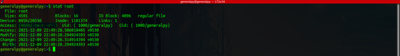
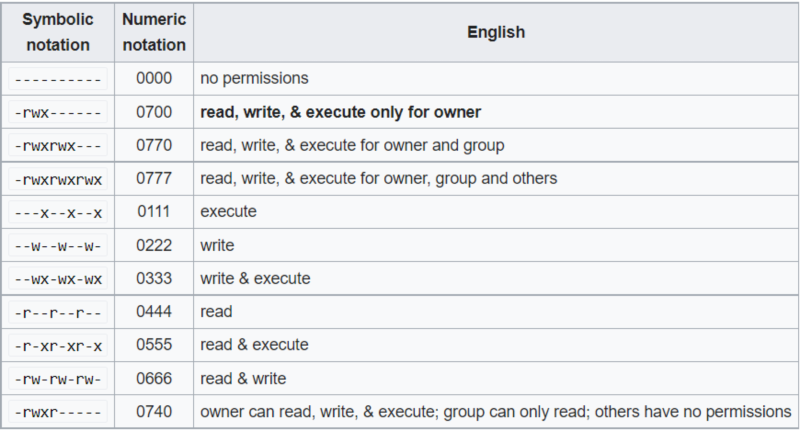

The file permissions can be represented by symbols(character) or in numeric(octal) form.
Output of ls -l gave us symbolic representation of file permissions. We can use stat command to get file permissions in octal as well as symbolic format.

The file permissions can be represented in format 0usergroupothers where 0 can be ommited.( 0755 = 755)
Now, each permissions is given a specific number, read(r) = 4 , write(w) = 2, execute(x) = 1 and nothing(-) = 0.
Total sum of these three permissions is the number for that user category.
Lets take above example. There we have symbolic representation as rw-r--r--, so we have numbers 420 400 400 for owner, group, and others. Now for user sum is 6, for group sum is 4 and for others sum is 4. That is what written in output of stat command 0644. We don't write each number individually like 420400400, we get sum of these numbers and use them to represent file permissions eg 644.
All possible file permission numbers.

To give all permissions to everyone, number will be 777.